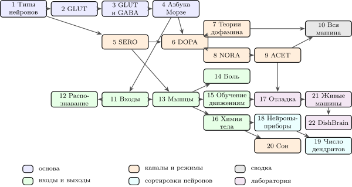

Книгу не обязательно читать подряд. Главы 1–4 — общая основа: типы нейронов, что вычисляют GLUT и GABA и на каком языке они говорят. Дальше книга ветвится. Карта на рис. 1 показывает, какие главы на какие опираются: стрелка от главы к главе значит, что в используются понятия и формулы из . На карте только главные зависимости; мелкие ссылки назад тексту не мешают.

Пути через книгу
| Путь | Для кого | Главы по порядку |
| курс на одну четверть | преподаватель, 10 недель | неделя 1: гл. 1–2; 2: гл. 3; 3: гл. 4; 4: гл. 5–6; 5: гл. 7–8; 6: гл. 9; 7: гл. 10; 8: гл. 11–12; 9: гл. 13 и 15; 10: гл. 17 |
| ИИ и машинное обучение | тот, кто знает нейросети и хочет понять, как учится мозг | 1–4, 5 (бегло), 6, 7, 8, 9, 11 (бегло), 12, 13 (бегло), 15 |
| электроника и железо | схемотехник, разработчик нейроморфных чипов | 1–4, 5, 11, 13, 16, 18, 19, 17 (главы 9 и 15 бегло) |
| нейроинтерфейсы и живые вычислители | тот, кто строит интерфейсы мозг—компьютер и чипы с живыми нейронами | 1, 2, 4, 11, 13, 17 (главы 9 и 15 бегло), 21, 22 (главу 12 бегло) |
| быстрый обзор | инженер, у которого есть выходные | 1, 2, 3, 6, 10; ссылки главы 6 на главы 4–5 понятны из контекста |
«Бегло» значит: достаточно прочитать начало главы, её утверждения в жёлтых рамках и итоговую таблицу.
В конце каждой главы есть задачи: оценки, выводы, моделирование и проектирование; краткие ответы собраны в приложении 22.8. Все обозначения — в приложении 22.8, а опыты, на которых держатся главные утверждения каждой главы, — в приложении 22.8. Числа в книге получены из небольших программ в папке models/; их можно запустить и изменить.